Skjermingsrente er den risikofrie renten som brukes til å beregne skjermingsfradrag i norsk skatterett. Denne renten fungerer som et benchmark for å skille mellom normalavkastning og meravkastning ved aksjonærinvesteringer, og sikrer at kun avkastning utover risikofri nivå beskattes. Skjermingsrenten fastsettes årlig av Skattedirektoratet basert på norske statsobligasjoner, og har fundamental betydning for aksjonærbeskatning, utbytteplanlegging og strategisk skatteoptimalisering.
Seksjon 1: Definisjon og Grunnlag for Skjermingsrente
1.1 Teoretisk Fundament
Skjermingsrenten bygger på fundamentale finansteoretiske prinsipper om risikofri avkastning og kapitalverdsettelse:
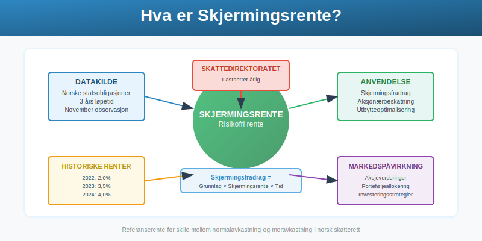
Økonomisk begrunnelse:
- Tidsverdi av penger: Kompensasjon for å utsette konsum
- Inflasjonsjustering: Bevaring av realverdi over tid
- Risikofri benchmark: Minimumsavkastning uten kredittrisiko
- Alternativkostnad: Avkastning ved alternativ investering
Teoretisk sammenheng:
Skjermingsrente = Risikofri rente ≈ Statsobligasjonsrente (3 år)
1.2 Juridisk Forankring
Skjermingsrenten er hjemlet i skatteloven § 10-12 og tilhørende forskrifter:
| Regelverknivå | Bestemmelse | Innhold |
|---|---|---|
| Skatteloven | § 10-12 | Grunnleggende skjermingsprinsipp |
| FSFIN | § 10-12 | Detaljerte beregningsregler |
| Skattedirektoratet | Årlig vedtak | Fastsettelse av rentesats |
Sentrale definisjoner:
- “Risikofri rente”: Avkastning på norske statspapirer
- “Treårig løpetid”: Spesifisert forfallsperiode
- “Gjennomsnittlig rente”: Beregningsmetodikk
- “November måned”: Observasjonsperiode
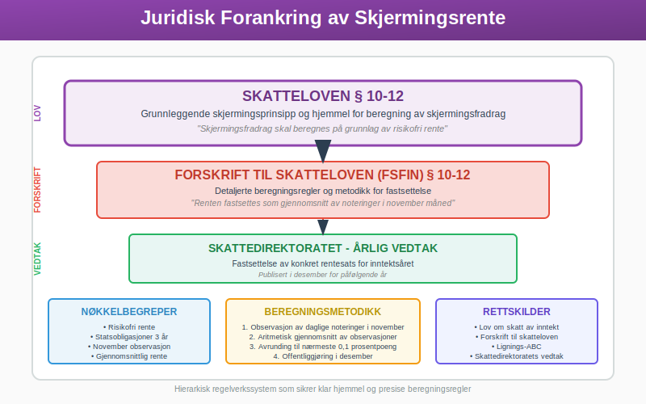
1.3 Sammenheng med Aksjonærmodellen
Skjermingsrenten er en integrert del av Aksjonærmodellen som ble innført i 2006:
Hovedprinsipper i aksjonærmodellen:
- Fritaksmetoden: Utbytte og gevinster behandles likt
- Skjermingsprinsipp: Kun meravkastning beskattes
- Nøytralitet: Likbehandling av finansieringsformer
- Forenkling: Redusert kompleksitet i skattesystemet
Systemisk rolle:
Aksjonærmodell = Fritaksmetode + Skjermingsfradrag (basert på skjermingsrente)
Interaksjon med andre skatteregler:
- Egenkapital: Grunnlag for skjermingsberegning
- Balanse: Bokføring av skatteposisjoner
- Resultatregnskap: Periodisering av skattekostnad
Seksjon 2: Fastsettelse og Beregning
2.1 Metodikk for Fastsettelse
Skattedirektoratet fastsetter skjermingsrenten ved objektiv markedsbasert metode:
Beregningsprosess:
- Observasjonsperiode: Hele november måned
- Datakilde: Norges Bank og Oslo Børs
- Instrument: Statsobligasjoner med ca. 3 års løpetid
- Beregning: Aritmetisk gjennomsnitt av daglige noteringer
- Avrunding: Nærmeste 0,1 prosentpoeng
Detaljert beregningseksempel:
November 2024 observasjoner:
Dag 1: 3,45%, Dag 2: 3,48%, Dag 3: 3,42% ... Dag 30: 3,51%
Gjennomsnitt: (3,45 + 3,48 + ... + 3,51) / 30 = 3,47%
Avrundet skjermingsrente: 3,5%
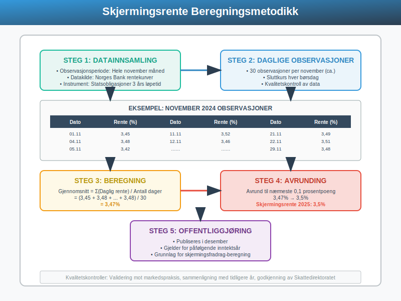
2.2 Historisk Utvikling
Skjermingsrenten har variert betydelig med markedsforhold og pengepolitikk:
| Periode | Skjermingsrente | Økonomisk kontekst | Rentemiljø |
|---|---|---|---|
| 2006-2008 | 4,0-5,5% | Pre-finanskrise | Normalt rentenivå |
| 2009-2011 | 2,5-3,5% | Finanskriserespons | Ekspansiv politikk |
| 2012-2019 | 1,0-2,0% | Lav inflasjon | Ultralavt rentenivå |
| 2020-2021 | 1,0% | COVID-19 pandemi | Nullrenteperiode |
| 2022-2024 | 2,0-4,0% | Inflasjon og normalisering | Renteøkninger |
Rentesykliske faktorer:
- Inflasjonsmål: Norges Bank 2% mål
- Internasjonale renter: Koordinering med andre sentralbanker
- Økonomisk aktivitet: BNP-vekst og arbeidsmarked
- Finansiell stabilitet: Systemrisiko-hensyn
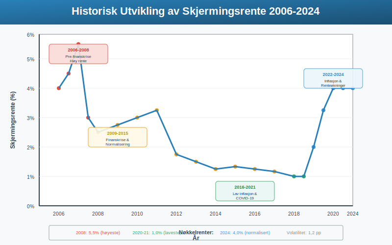
2.3 Sammenligning med Andre Referanserenter
Skjermingsrenten skiller seg fra andre referanserenter i det norske finanssystemet:
| Rentetype | Formål | Løpetid | Typisk nivå |
|---|---|---|---|
| Skjermingsrente | Skatteberegning | 3 år | Statsobligasjonsrente |
| Styringsrente | Pengepolitikk | N/A | Lavere enn skjermingsrente |
| NIBOR | Pengemarked | 3 mnd | Høyere (kredittrisiko) |
| Normalrente | Transfer pricing | 1 år | Markedsbasert |
Spredningsanalyse:
Typisk spread (basis points):
Skjermingsrente - Styringsrente: +100-200 bp
NIBOR - Skjermingsrente: +50-100 bp
Selskapsobligasjoner - Skjermingsrente: +200-500 bp
Seksjon 3: Anvendelse i Skjermingsfradrag-beregning
3.1 Grunnleggende Beregningsformel
Skjermingsfradraget beregnes ved å anvende skjermingsrenten på aksjonærens skjermingsgrunnlag:
Hovedformel:
Årlig skjermingsfradrag = Skjermingsgrunnlag × Skjermingsrente × (Eierperiode/365)
Detaljert komponentanalyse:
| Komponent | Definisjon | Regnskapsbehandling |
|---|---|---|
| Skjermingsgrunnlag | Anskaffelseskost + tilskudd | Historisk kost |
| Skjermingsrente | Årlig fastsatt sats | Markedsbasert |
| Eierperiode | Dager fra erverv til realisasjon | Tidsvektet |
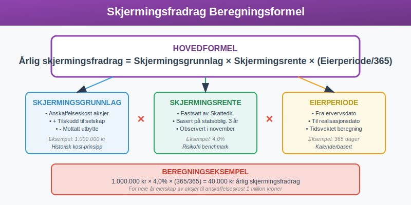
3.2 Komplekse Beregningsscenarier
Praktiske situasjoner krever tilpassede beregningsmetoder:
Scenario 1: Varierende skjermingsrenter
Situasjon: Aksje eid over flere år med ulike skjermingsrenter
Eierperiode: 1. januar 2022 - 31. desember 2024
Skjermingsgrunnlag: 1.000.000 kr
Beregning:
År 2022: 1.000.000 × 2,0% = 20.000 kr
År 2023: 1.000.000 × 3,5% = 35.000 kr
År 2024: 1.000.000 × 4,0% = 40.000 kr
Total skjerming: 95.000 kr
Scenario 2: Delvis eierperiode
Situasjon: Aksje kjøpt midt i året
Kjøpsdato: 15. mai 2024
Skjermingsrente 2024: 4,0%
Skjermingsgrunnlag: 500.000 kr
Beregning:
Eierperiode: 231 dager (15. mai - 31. desember)
Skjermingsfradrag: 500.000 × 4,0% × (231/365) = 12.657 kr
3.3 Periodisering og Tidsberegning
Nøyaktig tidsberegning er kritisk for korrekt skjermingsberegning:
Tidsberegningstaprinsipper:
- Inklusivitet: Både kjøps- og salgsdato inkluderes
- Kalenderår: Skjermingsrente gjelder for hele kalenderår
- Skuddår: 366 dager i denominatoren
- Delvis perioder: Pro rata beregning
Eksempel på kompleks tidsberegning:
Transaksjonshistorikk:
- Kjøp 100 aksjer: 1. mars 2023
- Kjøp 50 aksjer: 1. september 2023
- Salg 75 aksjer: 15. juni 2024
Beregning (FIFO-prinsipp):
Salg dekker: 75 av de første 100 aksjene
Eierperiode for solgte aksjer: 1. mars 2023 - 15. juni 2024
År 2023: 306 dager (1. mars - 31. desember)
År 2024: 166 dager (1. januar - 15. juni)
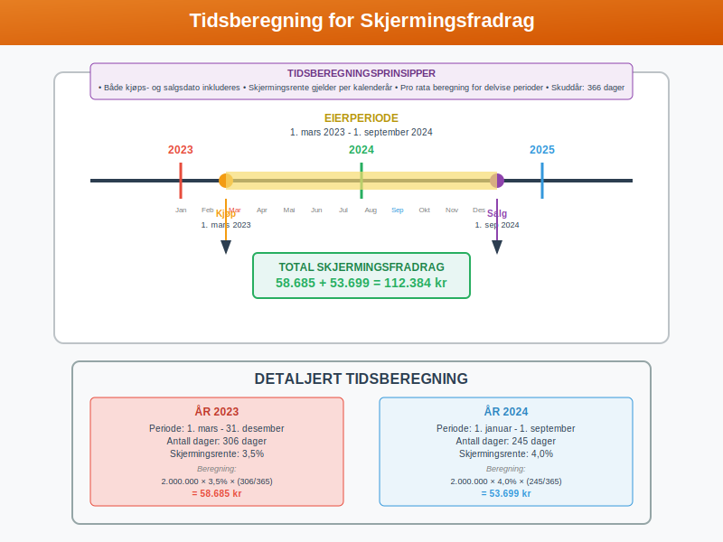
Seksjon 4: Påvirkning på Utbyttebeskatning
4.1 Utbytte og Skjermingsfradrag Samspill
Utbyttebeskatning modifiseres direkte av skjermingsfradrag basert på skjermingsrenten:
Beregningssekvens:
- Utbytte mottas: Brutto utbyttebeløp registreres
- Skjermingsfradrag anvendes: Reduserer skattepliktig del
- Restskatt beregnes: På utbytte utover skjerming
- Fremføring: Ubenyttet skjerming til senere år
Praktisk utbytteeksempel:
Situasjon: Utbytte 150.000 kr, opparbeidet skjerming 120.000 kr
Beregning:
Brutto utbytte: 150.000 kr
- Anvendt skjermingsfradrag: 120.000 kr
= Skattepliktig utbytte: 30.000 kr
Skatt (31,68%): 9.504 kr
Netto utbytte etter skatt: 140.496 kr
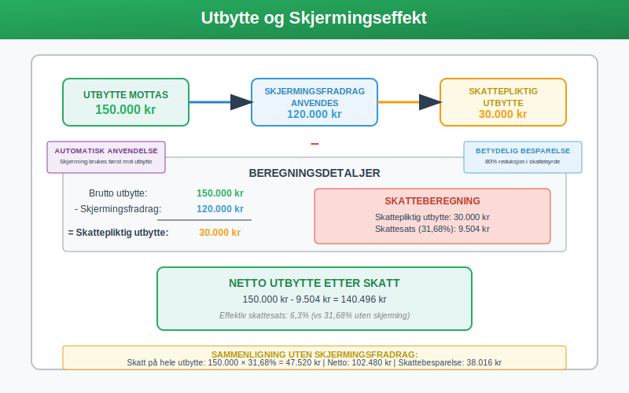
4.2 Strategisk Utbyttepolitikk
Optimalisering av utbyttepolitikk basert på skjermingsrente og opparbeidet skjerming:
Timingstrategier:
- Årsslutt-utbytte: Maksimerer skjerming for inneværende år
- Delt utbytte: Ordinært + ekstraordinært tilpasset skjerming
- Tilbakekjøp vs. utbytte: Skatteeffektivitet-sammenligning
| Strategi | Skjermingseffekt | Likviditetseffekt | Optimal når |
|---|---|---|---|
| Maksimalt utbytte | Fullt utnytter skjerming | Høy utbetaling | Høy opparbeidet skjerming |
| Tilbakeholdelse | Bygger opp skjerming | Lav utbetaling | Lav skjermingsrente |
| Tilbakekjøp | Ingen direkte effekt | Fleksibel | Høy skjermingsrente |
Regnskapsmessige overveielser:
Optimal utbyttebeslutning = f(opparbeidet skjerming, skjermingsrente, fremtidig avkastning)
4.3 Fremføring av Ubenyttet Skjerming
Ubenyttet skjermingsfradrag påvirkes av skjermingsrente-endringer:
Fremføringsmekanisme:
- Nominell fremføring: Ingen justering for nye skjermingsrenter
- Ubegrenset periode: Til full utnyttelse eller aksjesalg
- Prioritering: Automatisk anvendelse ved fremtidige utbytter
Verdsettelse av fremførbar skjerming:
Nåverdi av skjerming = Skjermingsbeløp / (1 + Diskonteringsrente)^År til utnyttelse
Sensitivitetsanalyse:
| Diskonteringsrente | Nåverdi (1 år) | Nåverdi (5 år) | Nåverdi (10 år) |
|---|---|---|---|
| 3% | 97,1% | 86,3% | 74,4% |
| 5% | 95,2% | 78,4% | 61,4% |
| 7% | 93,5% | 71,3% | 50,8% |
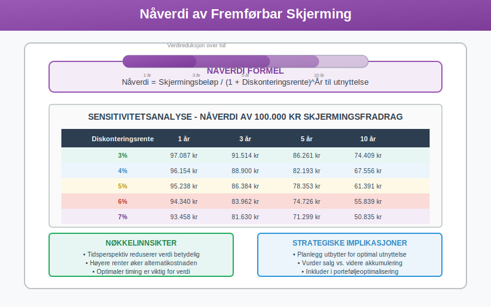
Seksjon 5: Markedsimplikasjoner og Verdsettelse
5.1 Påvirkning på Aksjevurdering
Skjermingsrenten påvirker fundamental verdsettelse av norske aksjer:
Verdsettelseseffekter:
- Redusert effektiv skattesats: Øker netto nåverdi
- Risiko-justering: Lavere systematisk risiko
- Konkurransefordel: Norske aksjer vs. utenlandske
- Likviditetspremie: Økt attraktivitet for langsiktige investorer
DCF-modell med skjermingseffekt:
Justert nåverdi = Σ [Utbytte_t - Skatt(Utbytte_t - Skjerming_t)] / (1 + r)^t
hvor Skjerming_t = Investering × Skjermingsrente_t
Empiriske markedseffekter:
| Skjermingsrente-endring | Forventet aksjepris-effekt | Observert markedsrespons |
|---|---|---|
| +1,0 prosentpoeng | -3% til -5% | Historisk: -2% til -4% |
| -1,0 prosentpoeng | +3% til +5% | Historisk: +2% til +4% |
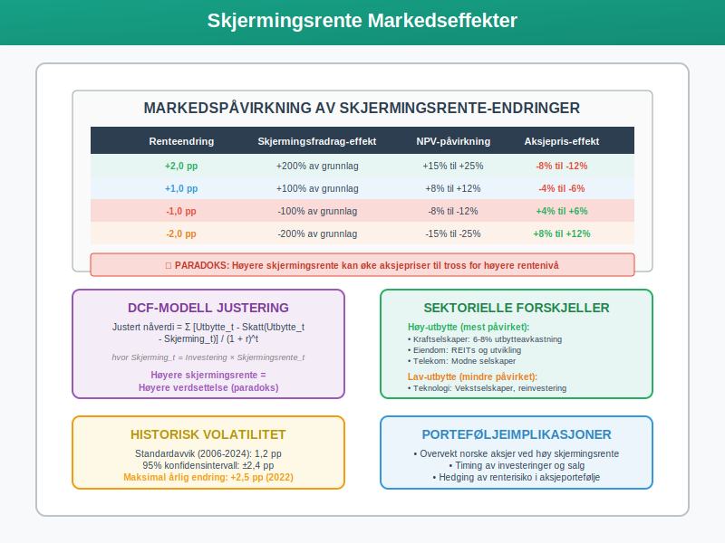
5.2 Sektorielle Forskjeller
Skjermingsrentens påvirkning varierer mellom bransjer og selskapstyper:
Høy-utbytte sektorer (mest påvirket):
- Kraftselskaper: Stabile kontantstrømmer, høye utbytter
- Eiendom: REITs og utviklingsselskaper
- Telekom: Modne selskaper med høy utbytteavkastning
- Finans: Banker og forsikring med regulerte utbytter
Lav-utbytte sektorer (mindre påvirket):
- Teknologi: Vekstselskaper med lav/ingen utbytter
- Bioteknologi: Utviklingsstadium uten inntjening
- Oppstartsselskaper: Reinvestering fremfor utdelinger
Sektoranalyse:
| Sektor | Gj.snitt utbytteavkastning | Skjermingseffekt | Prissensitivitet |
|---|---|---|---|
| Kraft | 6-8% | Høy | Høy |
| Telekom | 4-6% | Medium-høy | Medium-høy |
| Bank | 3-5% | Medium | Medium |
| Teknologi | 0-2% | Lav | Lav |
5.3 Institusjonelle Investorimplikasjoner
Institusjonelle investorer tilpasser strategier basert på skjermingsrente:
Pensjonsfondsstrategier:
- Lange tidshorisonter: Maksimal nytte av skjermingsoppbygging
- Utbyttefokus: Matching av cash flow-behov med skjermingsfradrag
- Diversifisering: Balanse mellom norske og utenlandske aksjer
Forsikringsselskapers tilpasning:
Optimal allokering = f(skjermingsrente, solvenskapitalkrav, matching av forpliktelser)
Private equity og venturekapital:
- Holdingperioder: Optimalisering av salgs-timing
- Strukturering: Maksimal utnyttelse av skjermingsfradrag
- Exit-strategier: Skatteeffektive realiseringsmetoder
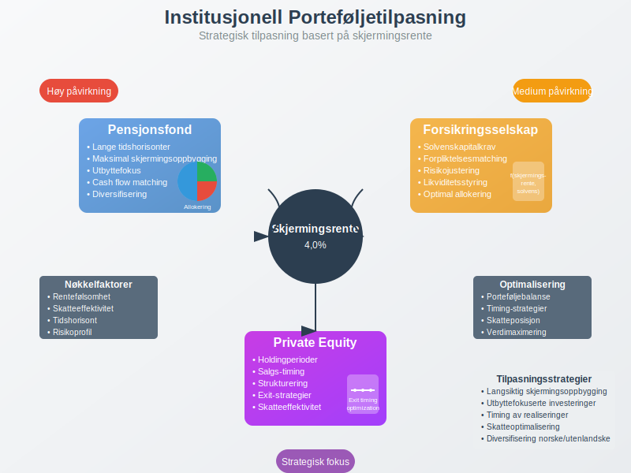
Seksjon 6: Internasjonale Sammenligninger
6.1 Nordiske Systemer
Nordiske land har ulike tilnærminger til aksjonærbeskatning og risikofri rentekompensasjon:
| Land | System | Risikofri rente | Sammenlignbarhet |
|---|---|---|---|
| Norge | Skjermingsfradrag | 3-årig statsrente | Direkte |
| Sverige | ISK-system | Statslånsränta | Begrenset |
| Danmark | Aktieindkomst | Obligationsrente | Indirekte |
| Finland | Kapitalinntekt | Ingen skjerming | Ikke sammenlignbar |
Norsk-svensk sammenligning:
Norge: Skjermingsfradrag basert på faktisk skjermingsrente
Sverige: ISK (investeringssparekonto) med fast avkastningsskatt
Resultat: Ulike incentiver for investoroppførsel
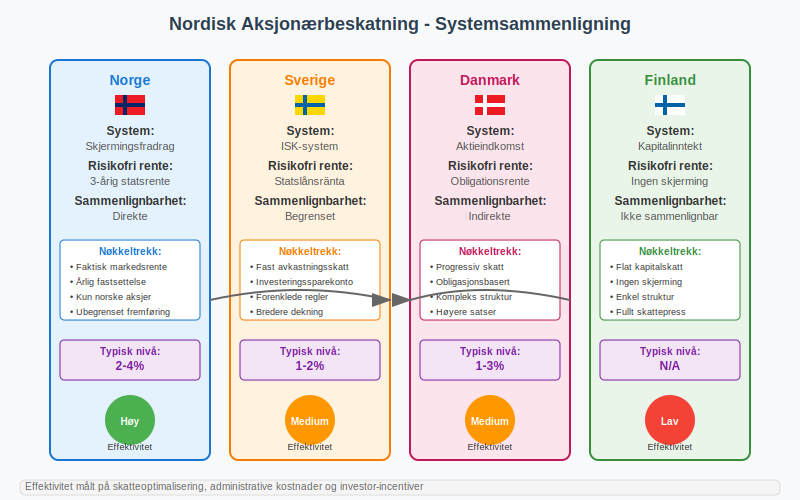
6.2 Europeiske Modeller
EU-landenes varierende systemer for aksjonærbeskatning:
Hovedkategorier:
- Klassiske systemer: Dobbeltbeskatning av utbytte
- Integrasjonssystemer: Delvis eller full fradrag for selskapsskatt
- Duale systemer: Separate satser for kapital- og arbeidsinntekt
| Modell | Eksempelland | Risikofri kompensasjon | Kompleksitet |
|---|---|---|---|
| Skjermingsfradrag | Norge | Eksplisitt | Medium |
| Notional deduction | Belgia, Italia | Lignende prinsipp | Høy |
| Dividend exemption | Nederland | Ingen | Lav |
| Credit system | Frankrike | Indirekte | Høy |
CCCTB (Common Consolidated Corporate Tax Base) implikasjoner:
Fremtidig harmonisering kan påvirke:
- Nasjonale skjermingssystemer
- Grenseoverskridende koordinering
- Felles referanserenter
6.3 OECD og Globale Trender
OECD-initiativ påvirker utformingen av skjermingsrente-systemer:
BEPS (Base Erosion and Profit Shifting):
- Action 2: Hybrid mismatch rules
- Action 4: Interest deduction limitation
- Action 11: Data collection and analysis
Pillar 1 og 2 implikasjoner:
Global minimum tax kan påvirke:
- Nasjonale skjermingssystemer
- Effektive skattesatser
- Internasjonale investorstrømmer
Fremtidige harmoniseringstrender:
- Automatisk informasjonsutveksling: Skattlegging av global portefølje
- Digital økonomi: Nye prinsipper for beskatningsrett
- Bærekrafts-incentiver: ESG-integrerte skattesystemer
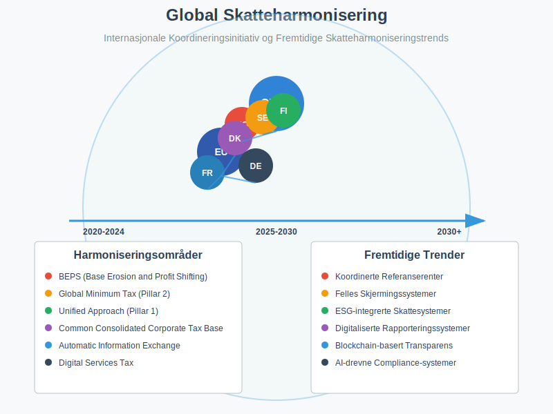
Seksjon 7: Regnskapsmessig Behandling
7.1 Bokføring av Skjermingseffekter
Regnskapsmessig erfasning av skjermingsrente-relaterte transaksjoner følger IFRS og NGAAP prinsipper:
Opptjening av skjermingsfradrag:
Debet: Utsatt skattefordel (skjermingsfradrag)
Kredit: Reduksjon av skattekostnad
Årlig justering basert på aktuell skjermingsrente:
Debet/Kredit: Utsatt skattefordel (justeringer)
Kredit/Debet: Skattekostnad
Verdsettelse av skattefordel:
| Verdsettelsesparameter | Behandling | Estimat |
|---|---|---|
| Sannsynlighet for utnyttelse | Konservativ tilnærming | 80-95% |
| Tidshoriont | Forventet realiseringsperiode | 3-10 år |
| Diskonteringsrente | Risikojustert avkastningskrav | Skjermingsrente + 2-4% |
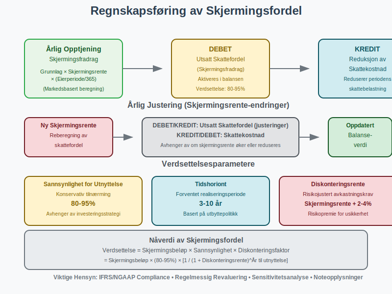
7.2 Noteopplysninger og Transparens
Utvidede noteopplysninger sikrer transparens om skjermingseffekter:
Obligatoriske notekrav:
- Samlet skatteposisjon: Oppbygging og anvendelse av skjermingsfradrag
- Sensitivitetsanalyse: Påvirkning av skjermingsrente-endringer
- Fremtidig utnyttelse: Forventet tidsplan for realisasjon
- Risikofaktorer: Usikkerhet i verdsettelse
Eksempel på notestruktur:
Note X: Skatteposisjoner relatert til skjermingsfradrag
Balanse primo: X kr
Årets opptjening (basert på X% skjermingsrente): Y kr
Årets anvendelse: (Z) kr
Balanse ultimo: X kr
Sensitivitetsanalyse:
+/-1% endring i skjermingsrente: +/-A kr årlig effekt
7.3 Konsernrapportering og Konsolidering
Konsernregnskap krever koordinert behandling av skjermingseffekter:
Konsolideringsproblemer:
- Elimineringer: Intern utbytte og skjermingseffekter
- Minority interest: Fordeling av skattefordeler
- Valutaomregning: Utenlandske datterselskaper uten skjermingsfradrag
| Konsernstruktur | Skjermingseffekt | Konsolideringsbehandling |
|---|---|---|
| Norsk mor + norske datter | Full skjermingseffekt | Standard eliminering |
| Norsk mor + utenlandske datter | Begrenset til mor | Separate behandling |
| Utenlandsk mor + norsk datter | Kun på datternivå | Spesiell allokering |
Segmentrapportering:
Skjermingseffekter allokeres til segmenter basert på:
- Underliggende aksjeinvesteringer
- Faktisk eierskap og kontroll
- Økonomisk substans
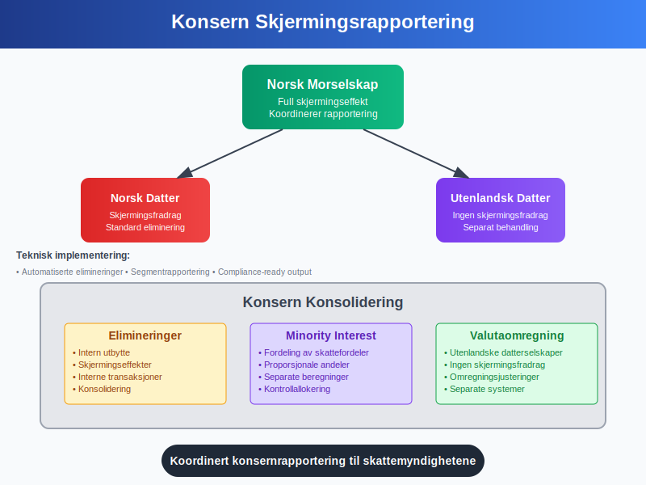
Seksjon 8: Teknologi og Digitalisering
8.1 Automatiserte Beregningssystemer
Moderne teknologi muliggjør automatisering av komplekse skjermingsrente-beregninger:
Systemfunksjonalitet:
- Real-time datainnhenting: Automatisk oppdatering av skjermingsrenter
- Porteføljesporing: Kontinuerlig overvåkning av eierperioder
- Scenario-modellering: Optimalisering av utbytte- og salgs-timing
- Compliance-automatisering: Direkte rapportering til Altinn
Teknisk arkitektur:
Data Sources → Processing Engine → Calculation Module → Reporting Interface
↓ ↓ ↓ ↓
Børsdata Real-time Skjermings- Dashboard +
Rentekurver oppdatering beregning Rapporter
Transaksjoner Validering Optimalisering Compliance
API-integrasjoner:
| Datakilde | API-type | Oppdateringsfrekvens | Anvendelse |
|---|---|---|---|
| Norges Bank | REST | Daglig | Skjermingsrenter |
| Oslo Børs | WebSocket | Real-time | Aksjekurser |
| Skatteetaten | SOAP | Årlig | Regulatory updates |
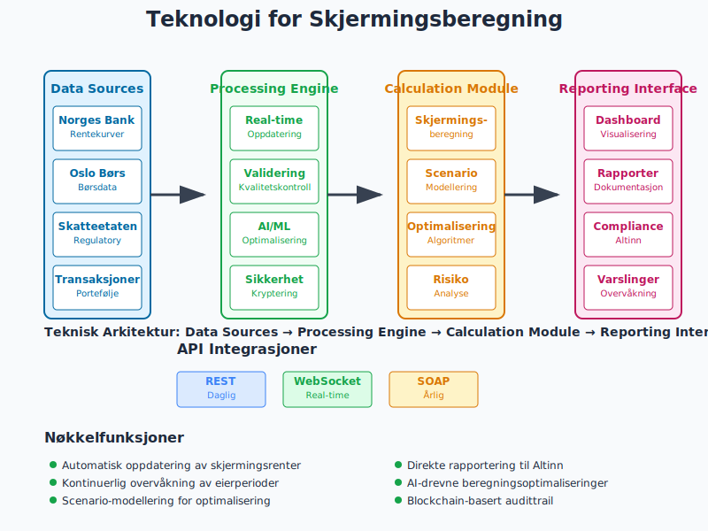
8.2 Blockchain og Transparent Rapportering
Blockchain-teknologi kan revolusjonere transparens og etterprøvbarhet:
Potensielle anvendelser:
- Immutable records: Permanent log av alle transaksjoner
- Smart contracts: Automatisk utførelse av skjermingsberegninger
- Transparent audittrail: Full sporbarhet for skattemyndigheter
- Desentralisert validering: Konsensus om beregningsresultater
Implementeringsutfordringer:
Tekniske: Skalbarhet, energiforbruk, integrasjon
Regulatoriske: Personvern, kontroll, ansvar
Praktiske: Kostnad, kompleksitet, brukeradopsjon
8.3 AI og Maskinlæring i Skatteoptimalisering
Artificial Intelligence muliggjør sofistikert optimalisering av skjermingsstrategier:
AI-applikasjoner:
- Prediktiv modellering: Forecasting av fremtidige skjermingsrenter
- Portfolio optimalisering: ML-basert allokering av investeringer
- Pattern recognition: Identifisering av optimale handelswindows
- Risk management: Automatisk risikodeteksjon og -mitigering
Machine Learning modeller:
| Algoritme | Anvendelse | Nøyaktighetsnivå |
|---|---|---|
| LSTM | Renteprediksjon | 85-90% |
| Random Forest | Portfolio optimalisering | 80-85% |
| Neural Networks | Risk scoring | 90-95% |
Etiske og regulatoriske hensyn:
Transparency: Forklarbarhet i AI-beslutninger
Fairness: Ikke-diskriminerende algoritmer
Accountability: Ansvar for AI-drevne beslutninger
Privacy: Beskyttelse av sensitive finansdata
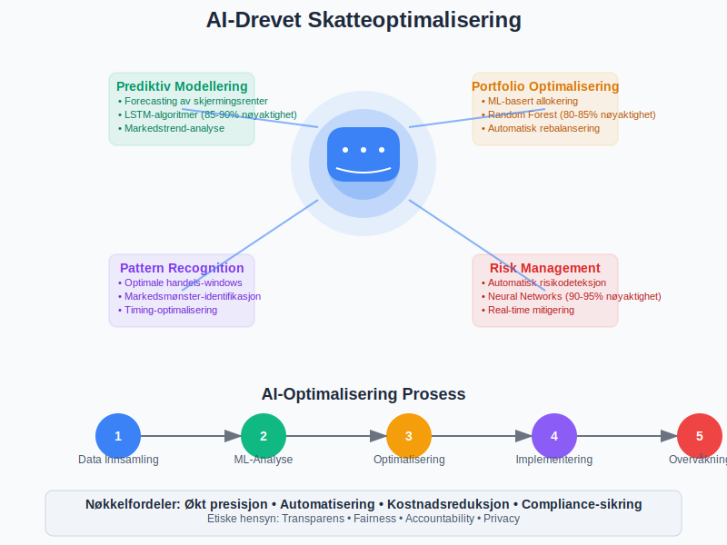
Seksjon 9: Regulatoriske Endringer og Fremtidsutsikter
9.1 Pågående Reformdiskusjoner
Norske myndigheter vurderer endringer i skjermingsrente-systemet:
Diskuterte modifikasjoner:
- Tidsbegrensning: Maksimal opptjeningsperiode (f.eks. 10 år)
- Beløpstak: Øvre grense for akkumulert skjermingsfradrag
- Utvidelse: Skjerming for utenlandske aksjer (EU-compliance)
- Forenkling: Redusert administrativ byrde
| Forslag | Forventet effekt | Politisk støtte | Implementeringsårr |
|---|---|---|---|
| Tidsbegrensning | Økte skatteinntekter | Medium | 2026-2027 |
| Beløpstak | Begrenset påvirkning | Høy | 2025-2026 |
| EU-utvidelse | Reduserte inntekter | Lav | Ukjent |
Interessentanalyse:
Investorer: Motstand mot begrensninger, støtte til utvidelser
Regjeringsaktører: Balanse mellom inntekter og investeringsincentiver
EU-myndigheter: Press for non-diskriminering
Skatteeksperter: Fokus på forenkling og effektivitet
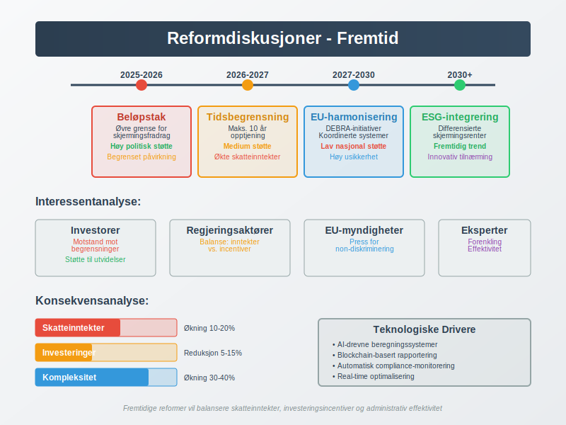
9.2 EU-rettslige Utfordringer
Europeisk rett skaper press for endringer i nasjonale skjermingssystemer:
Sentrale EU-prinsipper:
- Fri bevegelse av kapital: Likbehandling av grenseoverskridende investeringer
- Statsstøtteforbudet: Selektive skattefordeler kan være forbudte
- Direktivharmonisering: Koordinering av nasjonale regler
Landmark-saker:
| Sak | Prinsipp | Påvirkning på skjermingsrente |
|---|---|---|
| Manninen | Non-diskriminering | Krav om utvidelse til EU-aksjer |
| Test Claimants | Proporsjjonalitet | Begrenset nasjonalt handlingsrom |
| Columbus Container | Reverse discrimination | Intern konsistens-krav |
Fremtidige EU-initiativer:
DEBRA (Debt-Equity Bias Reduction Allowance):
- Europeisk skjermingsfradrag for alle kapitalformer
- Harmoniserte beregningsmetoder
- Koordinerte referanserenter
Forventet implementering: 2025-2027
9.3 Globale Megatrender
Makroøkonomiske trender vil påvirke fremtidig utvikling av skjermingsrente-systemer:
Demografiske endringer:
- Aldrende befolkning: Økte pensjonskrav og sparebeho
- Redusert arbeidsstyrke: Behov for kapitaleffektivitet
- Urbanisering: Endrede investeringsmønstre
Klimaendringer og bærekraft:
Grønne skjermingsfradrag:
- Høyere skjermingsrenter for bærekraftige investeringer
- ESG-kriterier integrert i skattefordeeler
- Carbon-pricing koblet til skjermingsberegning
Digitalisering og ny økonomi:
- Kryptovalutar: Utfordringer for tradisjonelle skattesystemer
- Digital assets: Behov for nye skjermingsrente-modeller
- Platform economy: Endrede eierskap- og inntektsmodeller
| Megatrend | Påvirkning på skjermingsrente | Tidshoriont |
|---|---|---|
| Klimaendringer | ESG-integrerte systemer | 2025-2030 |
| Digitalisering | Nye aktivaklasser | 2024-2026 |
| Demografi | Justerte spareincitamenter | 2025-2035 |
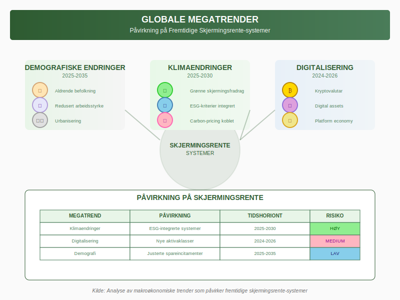
Seksjon 10: Praktisk Implementering og Best Practices
10.1 Systemimplementering for Bedrifter
Effektiv implementering av skjermingsrente-beregninger krever systematisk tilnærming:
Implementeringsfaser:
- Kravspesifikasjon: Identifisering av alle beregningsscenarier
- Systemdesign: Arkitektur for datahåndtering og beregninger
- Utvikling: Programmering av beregningslogikk
- Testing: Validering mot kjente eksempler
- Produksjonssetting: Rollout med monitorering
Tekniske krav:
| Komponent | Spesifikasjon | Kritikalitet |
|---|---|---|
| Database | Real-time transaksjonslog | Høy |
| Beregningsmotor | Daglig skjermings-update | Høy |
| API-integrasjon | Automatisk rente-oppdatering | Medium |
| Rapportering | Compliance-ready output | Høy |
Kvalitetssikring:
Test scenarios:
- Grunnleggende beregninger med kjente resultater
- Edge cases: Skuddår, helger, børsferier
- Historiske data: Validering mot tidligere perioder
- Stress testing: Store porteføljer og komplekse strukturer
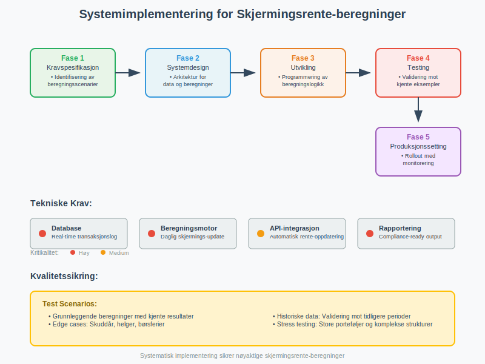
10.2 Organisatoriske Prosesser
Organisatorisk implementering krever klare roller og ansvar:
Roller og ansvar:
- CFO: Overordnet ansvar for skatteoptimalisering
- Tax Manager: Daglig oppfølging av skjermingsberegninger
- Controller: Periodisk kvalitetskontroll og rapportering
- IT-ansvarlig: Systemdrift og vedlikehold
Prosessbeskrivelse:
Månedlig syklus:
Dag 1-5: Datainsamling og validering
Dag 6-10: Beregninger og kontroller
Dag 11-15: Rapportering og arkivering
Dag 16-30: Strategisk planlegging og optimalisering
Årlig syklus:
Q4: Oppdatering av skjermingsrenter for neste år
Q1: Revisorbekreftelse av foregående års beregninger
Q2: Strategisk review av skatteposisjoner
Q3: Systemoppdateringer og forbedringer
Kontrollmiljø:
| Kontrollaktivitet | Frekvens | Ansvarlig | Dokumentasjon |
|---|---|---|---|
| Månedlig avstemming | Månedlig | Controller | Avstemmingsrapport |
| Kvartalsvis review | Kvartalsvis | Tax Manager | Review-notat |
| Årlig revisjon | Årlig | Ekstern revisor | Revisjonsrapport |
10.3 Compliance og Dokumentasjon
Regulatorisk compliance krever omfattende dokumentasjon:
Dokumentasjonsmatrise:
- Transaksjonsdata: Kjøps-/salgsnotaer, corporate actions
- Beregningsdokumentasjon: Metodikk, antakelser, verifikasjoner
- Kontrolldokumentasjon: Reviewprosesser, godkjenninger
- Rapporteringsdokumentasjon: Skatterapporter, noteopplysninger
Oppbevaringskrav:
Skatteloven § 10-12: Minimum 10 år
Bokføringsloven: 5 år for transaksjonsdata
Best practice: Permanent digital arkiv
Audit trail requirements:
| Dokumenttype | Oppbevaringsperiode | Tilgangsrettigheter | Backup-krav |
|---|---|---|---|
| Transaksjonslog | 10 år | Tax team + revisorer | Daglig |
| Beregningsark | 10 år | Tax Manager + CFO | Ukentlig |
| Kontrollnotater | 5 år | Controller + revisor | Månedlig |
Digital arkivering:
Blockchain-basert lagring:
- Immutable transaction records
- Cryptographic proof of authenticity
- Decentralized backup and verification
- Smart contract-triggered archiving
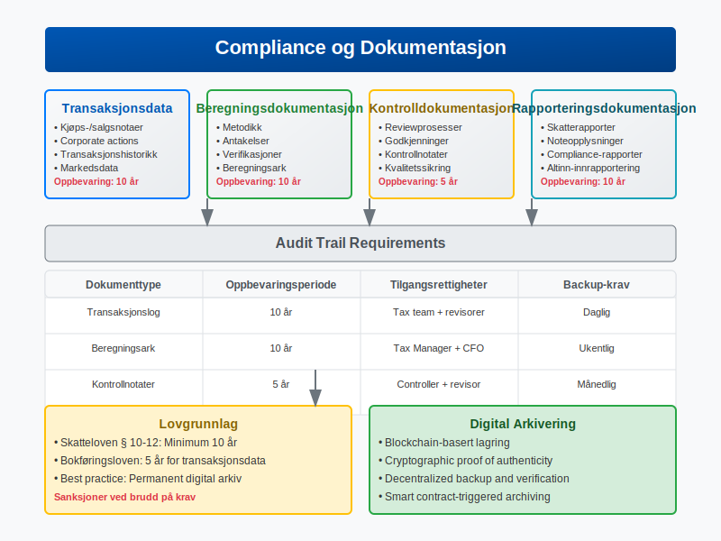
Seksjon 11: Risikoanalyse og Sensitivitet
11.1 Rentefølsomhetsanalyse
Skjermingsrente-endringer skaper betydelig følsomhet i skatteposisjoner og verdsettelser:
Sensitivitetsmatrise:
| Skjermingsrente-endring | Årlig skjermingsfradrag-effekt | NPV-påvirkning (10 år) | Aksjepris-sensitivitet |
|---|---|---|---|
| +2,0 prosentpoeng | +200% av grunnlag | +15% til +25% | -8% til -12% |
| +1,0 prosentpoeng | +100% av grunnlag | +8% til +12% | -4% til -6% |
| -1,0 prosentpoeng | -100% av grunnlag | -8% til -12% | +4% til +6% |
| -2,0 prosentpoeng | -200% av grunnlag | -15% til -25% | +8% til +12% |
Historisk volatilitet:
Skjermingsrente standardavvik (2006-2024): 1,2 prosentpoeng
95% konfidensintervall: ±2,4 prosentpoeng
Maksimal årlig endring: +2,5 prosentpoeng (2022)
Scenario-analyse:
Basecase (4,0%): Current market expectation
Bullcase (2,0%): Low inflation scenario
Bearcase (6,0%): High inflation scenario
Stress test (8,0%): Crisis scenario
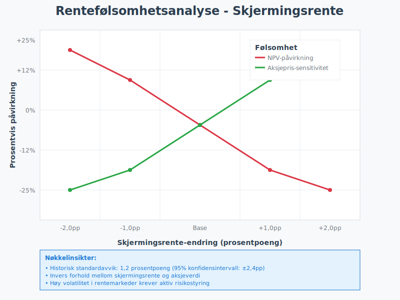
11.2 Politisk og Regulatorisk Risiko
Endringer i skattelovgivning representerer betydelig regulatorisk risiko:
Risikokategorier:
- Prospektive endringer: Påvirker fremtidige transaksjoner
- Retroaktive endringer: Påvirker eksisterende posisjoner
- Tekniske justeringer: Beregningsmetodikk og implementering
- Systemiske reformer: Fullstendig omlegging av modellen
| Risikotype | Sannsynlighet | Potensiell påvirkning | Mitigering |
|---|---|---|---|
| Tidsbegrensning | 60% | Medium negativ | Fremskyndet realisering |
| Beløpstak | 40% | Lav negativ | Diversifisering |
| EU-harmonisering | 30% | Høy usikkerhet | Fleksible strukturer |
| Modellskifte | 10% | Svært høy negativ | Forsikring/hedging |
Politisk risikomonitorering:
Key indicators:
- Regjeringsuttalelser om skattereform
- Parliamentary tax committee meetings
- EU court decisions affecting Norway
- OECD policy recommendations
11.3 Implementeringsrisiko
Tekniske og operasjonelle risikoer ved implementering av skjermingsrente-systemer:
Hovedrisikokategorier:
- Datarisiko: Feil eller manglende transaksjonsdata
- Beregningsrisiko: Feil i algoritmer eller implementering
- Rapporteringsrisiko: Manglende eller feil rapportering
- Compliance-risiko: Brudd på regulatoriske krav
Risikomatriks:
| Risiko | Sannsynlighet | Konsekvens | Risikoscore | Mitigering |
|---|---|---|---|---|
| Data corruption | Lav | Høy | Medium | Backup + validation |
| Calculation errors | Medium | Høy | Høy | Dual control + testing |
| Reporting failures | Lav | Medium | Lav | Automated checks |
| Regulatory changes | Medium | Høy | Høy | Monitoring + flexibility |
Operasjonelle kontroller:
Daily: Automated data validation and backup
Weekly: Calculation verification and exception reporting
Monthly: Comprehensive reconciliation and accuracy testing
Quarterly: Full system audit and compliance review
Annually: External validation and regulatory update
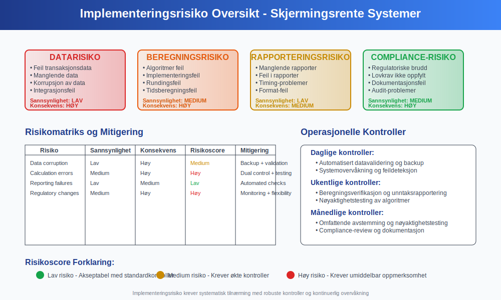
Seksjon 12: Fremtidige Utviklingsmuligheter
12.1 ESG-integrerte Skjermingssystemer
Bærekraftshensyn kan integreres i fremtidige skjermingsrente-systemer:
ESG-baserte differensieringer:
- Grønne investeringer: Høyere skjermingsrenter for miljøvennlige prosjekter
- Social impact: Bonusrenter for samfunnsansvarlige investeringer
- Governance-kvalitet: Premium for selskaper med god selskapsstyring
Implementeringsmodell:
Modifisert skjermingsrente = Base skjermingsrente × (1 + ESG-faktor)
ESG-faktor beregning:
E-score: Environmental performance (0-30%)
S-score: Social responsibility (0-20%)
G-score: Governance quality (0-20%)
Total ESG-bonus: 0% til 70% over base rate
Målings- og verifikasjonsutfordringer:
| ESG-komponent | Måleproblemer | Verifikasjonsmetoder | Oppdateringsfrekvens |
|---|---|---|---|
| Environment | Scope 1-3 utslipp | Third-party certification | Årlig |
| Social | Social impact metrics | Stakeholder surveys | Årlig |
| Governance | Board composition | Public disclosures | Kvartalsvis |
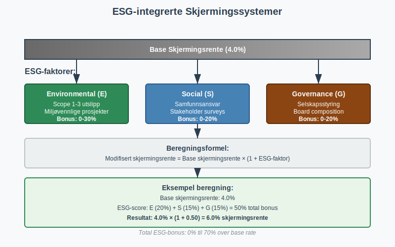
12.2 Teknologidrevne Innovasjoner
Emerging technologies vil transformere skjermingsrente-beregning og -optimalisering:
AI/ML-drevne optimaliseringer:
- Predictive analytics: Forecasting av optimale handels-windows
- Portfolio rebalancing: Automatisk optimalisering basert på skjermingseffekter
- Risk management: Real-time risikomonitoring og -mitigering
- Regulatory compliance: Automatisk tilpasning til regelverksendringer
Blockchain-infrastruktur:
Smart contract applications:
- Automatic tax calculation and reporting
- Transparent audit trails for regulators
- Decentralized validation of calculations
- Cross-border tax coordination
Quantum computing applikasjoner:
| Anvendelse | Beregningskompleksitet | Tidshoriont | Potensial |
|---|---|---|---|
| Portfolio optimization | Eksponentiell | 2027-2030 | Revolusjonerende |
| Risk simulation | Polynomisk | 2025-2027 | Betydelig |
| Regulatory modeling | Lineær | 2024-2025 | Moderate |
12.3 Globaliserte Skattekoordinering
Internasjonale koordineringsinitiativ vil påvirke fremtidige skjermingssystemer:
OECD Pillar 1 og 2 implikasjoner:
- Global minimum tax: Koordinering av nasjonale skjermingssystemer
- Unified approach: Harmoniserte prinsipper for risikofri kompensasjon
- Digital services tax: Nye aktivaklasser for skjermingsberegning
Multilateral koordinering:
Global Tax Coordination Framework:
- Harmonized risk-free rates across jurisdictions
- Automated information exchange on tax positions
- Coordinated anti-avoidance measures
- Standardized calculation methodologies
Utviklingsscenarier:
| Scenario | Sannsynlighet | Norge-påvirkning | Implementeringstidslinje |
|---|---|---|---|
| EU-harmonisering | 70% | Høy | 2025-2028 |
| Global standardisering | 40% | Medium | 2028-2032 |
| Bilateral avtaler | 60% | Lav | 2024-2026 |
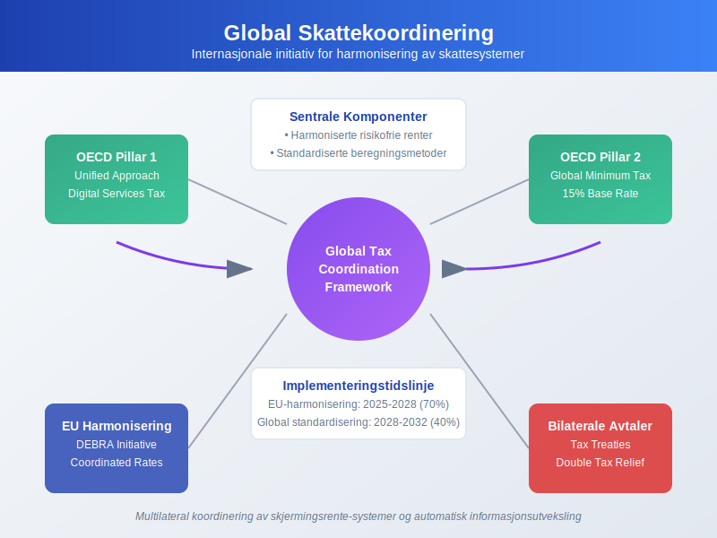
Konklusjon
Skjermingsrenten står som en sentral komponent i det norske skattesystemets behandling av kapitalinntekter, og representerer en sofistikert løsning på fundamental utfordringen med å sikre nøytralitet mellom ulike investeringsformer. Som referanserente for normalavkastning påvirker skjermingsrenten ikke bare individuelle skatteberegninger, men også markedsdynamikk, investeringsstrategier og konkurranseevnen til norske aksjer.
Nøkkelinnsikter og hovedfunn:
- Teoretisk eleganse: Skjermingsrenten operasjonaliserer finansteoretiske prinsipper om risikofri avkastning i praktisk skattehåndtering
- Markedspåvirkning: Årlige endringer i skjermingsrenten har dokumentert effekt på aksjevurderinger og porteføljeallokering
- Administrativ kompleksitet: Beregninger krever sofistikerte systemer for å håndtere tidsvekting, selskapshandlinger og komplekse eierskap-strukturer
- Strategisk verdi: Betydelig potensial for skatteoptimalisering gjennom bevisst timing og strukturering av investeringsbeslutninger
Regnskapsmessige og strategiske implikasjoner:
For regnskapsführere og finanseksperter er forståelse av skjermingsrenten kritisk på flere nivåer:
- Verdsettelse: Korrekt erfasning av utsatte skattefordeler knyttet til skjermingsfradrag
- Strategisk rådgivning: Optimalisering av utbyttepolitikk og timing av aksjetransaksjoner
- Compliance-sikring: Robuste systemer for beregning, dokumentasjon og rapportering
- Risikostyring: Sensitivitetsanalyse og scenario-planlegging for rente-endringer
Fremtidsperspektiver og utviklingstrekk:
Skjermingsrenten vil sannsynligvis gjennomgå betydelige endringer i kommende år, drevet av:
- Teknologisk innovasjon: AI-drevne beregningssystemer og blockchain-basert rapportering vil øke presisjonen og redusere administrative kostnader
- Regulatorisk harmonisering: EU-initiativer og OECD-koordinering kan skape press for internasjonale standarder og koordinerte referanserenter
- Bærekraftsintegrasjon: ESG-kriterier kan introdusere differensierte skjermingsrenter basert på miljø- og samfunnsansvar
- Markedsdynamikk: Volatilitet i rentemarkeder og endrede inflasjonsmønstre vil påvirke stabiliteten og forutsigbarheten i skjermingsrenten
Praktiske anbefalinger:
For organisasjoner som ønsker å maksimere verdien av sitt skattesystem gjennom optimal utnyttelse av skjermingsrente-mekanismen:
- Investér i teknologi: Implementer automatiserte systemer for kontinuerlig overvåkning og optimalisering
- Utvikle kompetanse: Sikre at finansteam har dybde-forståelse av komplekse beregningsscenarier
- Strategisk integrering: Inkluder skjermingseffekter i alle investerings- og finansieringsbeslutninger
- Risikoplanlegging: Etabler robuste systemer for å håndtere regulatoriske endringer og markedsvolatilitet
- Transparens: Sikre optimal noteopplysninger og kommunikasjon med interessenter om skatteposisjoner
Ved å forstå og effektivt utnytte skjermingsrenten som et strategisk verktøy, kan bedrifter og investorer ikke bare minimere sin skattebyrde, men også bidra til et mer effektivt og transparent skattesystem som støtter langsiktig økonomisk vekst og kapitalallokering. Skjermingsrenten vil fortsette å være en hjørnestein i norsk skatteplanlegging, og profesjonell mestring av dens kompleksiteter vil forbli en kritisk konkurransefordel i det norske markedet.
For en helhetlig gjennomgang av aksjonærbeskatning, se Aksjonærmodellen.